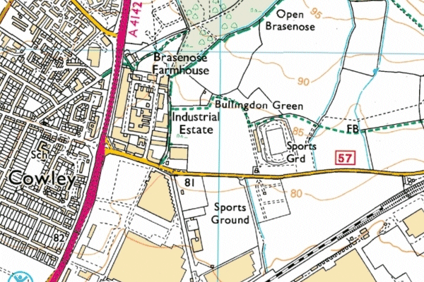

SEAA Under 17 and Under 15 Inter-Counties Championships
Sunday 10 September 2023
Horspath Sports Ground, Oxford
This competition was introduced in 2022, replacing the 8-Counties Under 17 match and the Under 15 section of the SEAA Under 20 and Under 15 Inter-Counties Championships. All the 19 constituent counties in the South of England Athletic Association region are invited to participate: Bedfordshire, Berkshire, Buckinghamshire, Cambridgeshire, Cornwall, Devon, Dorset, Essex, Hampshire, Hertfordshire, Kent, Middlesex, Norfolk, Oxfordshire, Somerset, Suffolk, Surrey, Sussex and Wiltshire.
Results
The Under 15 Boys came first in their competition, and the Under 15 Girls came second in theirs, one point behind Surrey. The Under 17 Women also came second and the Under 17 Men came seventh:
Under 17 Men (7th)
Under 17 Women (2nd)
Under 15 Boys (1st)
Under 15 Girls (2nd)
Results on the SEAA website
Results on the Power of 10 website
Location
Horspath Sports Ground is to the east of Oxford just off the Eastern Bypass (A4142). Its postcode is OX4 2RR.

View Ordnance Survey map (using Streetmap)
Get directions (using Google Maps)
View Bird's Eye (using Bing Maps)
Directions
From the South and South West take the A4142 towards Cowley and Headington. Beyond Cowley, turn right at the junction marked for Horspath. BMW Car Park is on the right after 600 yards. Do not park on the road.
{kind=link}
Parking
Car Parking is available at the BMW Car Park. This is on the
right hand side of the road leading down to the track. Please note
there is no parking, turning point or drop-off at the track itself.
Timetable
Track events
| Time | Event | Age Group | Heats/Final | |
|---|---|---|---|---|
| T1 | 10:00 | 400m Hurdles | U17M | 2 Heats |
| T2 | 10:15 | 300m Hurdles | U17W | 2 Heats |
| T3 | 10:30 | 1500m | U15G | Final |
| T4 | 10:40 | 1500m | U15B | Final |
| T5 | 10:50 | 1500m | U17W | Final |
| T6 | 11:00 | 1500m | U17M | Final |
| T7 | 11:10 | 300m | U15G | 2 Heats |
| T8 | 11:20 | 300m | U15B | 2 Heats |
| T9 | 11:35 | 100m | U15G | 2 Heats |
| T10 | 11:45 | 100m | U15B | 2 Heats |
| T11 | 11:55 | 100m | U17W | 2 Heats |
| T12 | 12:05 | 100m | U17M | 2 Heats |
| T13 | 12:20 | 300m Hurdles | U17W | Final |
| T14 | 12:30 | 400m Hurdles | U17M | Final |
| T15 | 12:45 | 800m | U15G | 2 Heats |
| T16 | 13:00 | 800m | U15B | 2 Heats |
| T17 | 13:15 | 800m | U17W | 2 Heats |
| T18 | 13:25 | 800m | U17M | 2 Heats |
| T19 | 13:40 | 300m | U15G | Final |
| T20 | 13:45 | 300m | U15B | Final |
| T21 | 13:55 | 100m | U15G | Final |
| T22 | 14:00 | 100m | U15B | Final |
| T23 | 14:05 | 100m | U17W | Final |
| T24 | 14:10 | 100m | U17M | Final |
| T25 | 14:20 | 75m Hurdles | U15G | 2 Heats |
| T26 | 14:35 | 80m Hurdles | U17W | 2 Heats |
| T27 | 14:45 | 80m Hurdles | U15B | 2 Heats |
| T28 | 15:00 | 100m Hurdles | U17M | 2 Heats |
| T29 | 15:15 | 200m | U15G | 2 Heats |
| T30 | 15:25 | 200m | U15B | 2 Heats |
| T31 | 15:35 | 200m | U17W | 2 Heats |
| T32 | 15:45 | 200m | U17M | 2 Heats |
| T33 | 16:00 | 400m | U17W | 2 Heats |
| T34 | 16:10 | 400m | U17M | 2 Heats |
| T35 | 16:20 | 800m | U15G | Final |
| T36 | 16:25 | 800m | U15B | Final |
| T37 | 16:30 | 800m | U17W | Final |
| T38 | 16:35 | 800m | U17M | Final |
| T39 | 16:45 | 100m Hurdles | U17M | Final |
| T40 | 16:55 | 80m Hurdles | U15B | Final |
| T41 | 17:00 | 80m Hurdles | U17W | Final |
| T42 | 17:10 | 75m Hurdles | U15G | Final |
| T43 | 17:25 | 200m | U15G | Final |
| T44 | 17:30 | 200m | U15B | Final |
| T45 | 17:35 | 200m | U17W | Final |
| T46 | 17:40 | 200m | U17M | Final |
| T47 | 17:50 | 400m | U17W | Final |
| T48 | 17:55 | 400m | U17M | Final |
Field events
| Time | Event | Age Group | |
|---|---|---|---|
| F1 | 10:30 | Shot | U15B |
| F2 | 10:30 | Discus | U17W |
| F3 | 10:30 | Hammer | U17M (Outside) |
| F4 | 10:30 | Pole Vault | U15G Start height 2.00m |
| F5 | 10:30 | Long Jump | U15G |
| F6 | 10:30 | High Jump | U17W Start height 1.40m |
| F7 | 11:30 | Long Jump | U17M |
| F8 | 11:50 | Shot | U17M |
| F9 | 11:50 | Discus | U15B |
| F10 | 11:50 | Hammer | U15G (Outside) |
| F11 | 12:20 | Pole Vault | U15B Start height 2.20m |
| F12 | 12:30 | High Jump | U17M Start height 1.60m |
| F13 | 12:30 | Long Jump | U17W |
| F14 | 13:10 | Hammer | U15B (Outside) |
| F15 | 13:10 | Javelin | U15G |
| F16 | 13:30 | Long Jump | U15B |
| F17 | 14:20 | Pole Vault | U17M Start height 2.70m |
| F18 | 14:30 | Hammer | U17W (Outside) |
| F19 | 14:30 | Shot | U15G |
| F20 | 14:30 | Triple Jump | U17W (9m and 11m boards) |
| F21 | 14:30 | High Jump | U15G Start height 1.30m |
| F22 | 14:30 | Javelin | U15B |
| F23 | 15:30 | Triple Jump | U15B (9m and 11m boards) |
| F24 | 15:50 | Discus | U15G (Outside) |
| F25 | 15:50 | Javelin | U17M |
| F26 | 15:50 | Shot | U17W |
| F27 | 16:30 | High Jump | U15B Start height 1.40m |
| F28 | 16:30 | Triple Jump | U17M (9m and 11m boards) |
| F29 | 16:45 | Pole Vault | U17W Start height 2.20m |
| F30 | 17:10 | Discus | U17M (Outside) |
| F31 | 17:10 | Javelin | U17W |
| F32 | 17:30 | Triple Jump | U15G (7m and 9m boards) |
High Jump progression: 5cm until 3 athletes left, then 3cm
Pole Vault progression: 20cm then 10cm
Throws and Horizontal Jumps: Three attempts with top 8 having 3 more
Team news
The following teams have been selected by the Team Managers:
Myles Richardson (Under 17 Men)
Amanda Purser (Under 17 Women)
Martin McBriar (Under 15 Boys and Girls)
Under 17 Men and Women
| Event | Under 17 Men | Under 17 Women |
|---|---|---|
| 100m | Samuel Wright (Aldershot, Farnham & District) | Fola Odofin (City of Portsmouth) |
| 200m | Idanayi Munowenyu (Basingstoke & Mid Hants) | Emily Lucas (Aldershot, Farnham & District) |
| 400m | Benoit Courdavault (City of Portsmouth) | Elsie Brindle (Winchester & District) |
| 800m | Orrin Wheeler (Basingstoke & Mid Hants) | Hattie Bond (Havant) |
| 1500m | Onjoro Sumba (Havant) | Imogen Edwards (Basingstoke & Mid Hants) |
| 80m Hurdles | n/a | Rebekah Smith (Winchester & District) |
| 100m Hurdles | - | n/a |
| 300m Hurdles | n/a | Lucy Smith (Winchester & District) |
| 400m Hurdles | Archie Ellis (Aldershot, Farnham & District) | n/a |
| High Jump | Jamie Goldsmith (Fleet & Crookham) | Mia Judd (Winchester & District) |
| Pole Vault | - | - |
| Long Jump | Logan Cookson (City of Portsmouth) | Mia Judd (Winchester & District) |
| Triple Jump | Logan Cookson (City of Portsmouth) | Ella Hutton (City of Portsmouth) |
| Shot | Jan Addington (Basingstoke & Mid Hants) | Abi Belward (Winchester & District) |
| Discus | Thomas Bennett (Jersey Spartan) | Erin McBriar (Winchester & District) |
| Hammer | Jack Burgess (City of Portsmouth) | Eloise MacDonald (Andover) |
| Javelin | Jack Holt (City of Portsmouth) | Abi Belward (Winchester & District) |
Under 15 Boys and Girls
| Event | Under 15 Boys | Under 15 Girls |
|---|---|---|
| 100m | Charlie Le Mains (Jersey Spartan) | Lily Flute (Winchester & District) |
| 200m | Charlie Le Mains (Jersey Spartan) | Chloe Poore (Winchester & District) |
| 300m | Zac Reynolds (Winchester & District) | Chloe Johnson (New Forest Junior) |
| 800m | Charlie Chambers (Southampton) | Daisy Allford (Basingstoke & Mid Hants) |
| 1500m | William Avery (Havant) | Isla Hall (Jersey Spartan) |
| 75m Hurdles | n/a | Gracie Osman (Winchester & District) |
| 80m Hurdles | Harvey Beckles (City of Portsmouth) | n/a |
| High Jump | Noah Wincott (Andover) | Denaya Guma (Basingstoke & Mid Hants) |
| Pole Vault | Stanley Shacklock (Southampton) | Lexie Trott (Southampton) |
| Long Jump | Ethan Easton (Basingstoke & Mid Hants) | Gracie Osman (Winchester & District) |
| Triple Jump | Tom Gaisford (City of Portsmouth) | Laila Holt (SETAFA) |
| Shot | Olivier Coulibaly (Southampton) | Charlotte Pabari (City of Portsmouth) |
| Discus | Olivier Coulibaly (Southampton) | Abigail McBriar (Winchester & District) |
| Hammer | Aaron Axtell (Southampton) | Bethany Mballa (Winchester & District) |
| Javelin | Ned Scott (Winchester & District) | Abigail McBriar (Winchester & District) |
Previous years' results
Under 17 Men and Women
| Venue and Date | Under 17 Men | Under 17 Women |
| Horspath, Oxford, 10 September 2022 | 4th | 2nd |
Under 15 Boys and Girls
| Venue and Date | Under 15 Boys | Under 15 Girls |
| Horspath, Oxford, 10 September 2022 | 4th | 5th |